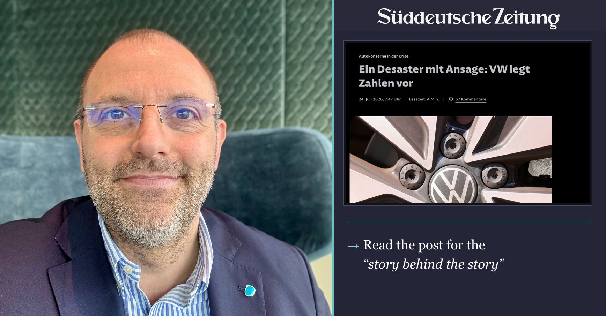

The headline is stark. And yes, Europe’s automotive industry is under enormous pressure.
But I do not believe that fatalism will help us move forward. In the public debate, it is understandable that we focus on tangible, emotionally charged terms such as the “Verbrennerverbot,” or place our hopes in concepts such as “hocheffiziente Verbrenner,” a phrase taken up a little while ago in Chancellor Friedrich Merz’s letter to European Commission President Ursula von der Leyen. 🦾 Technology choices matter. But they cannot solve the economics of an underutilized manufacturing footprint. Many European vehicle plants are operating at around 70% capacity, or even less. In a business with automotive margins, that is simply not a healthy operating model. This is the difficult reality behind today’s conversations about consolidating plants, employment and supplier structures. Behind these numbers are people, families, communities and often generations of industrial experience. We should never discuss restructuring as if it were an abstract exercise. But that is also why we owe everyone involved an honest conversation. Delaying difficult decisions may feel easier today, but it leaves us with less time and less capital to shape the transition responsibly. 🚀 Consolidation is not the objective. Renewal is. Europe needs the capacity to invest in affordable electric vehicles, software, faster development cycles and products that customers genuinely want. This is even more important now that China is no longer the dependable profit engine it once was, but the world’s most demanding automotive market. Europe has excellent engineers, strong brands and an extraordinary industrial base. Our manufacturers have credible answers. What matters now is executing them with speed, focus and determination. As I told Süddeutsche Zeitung, Germany and Europe must remain “hungry” and resist falling into paralysis when confronted with multiple crises. For me, this is not a message of decline. It is a message of responsibility, urgency and confidence grounded in reality. Thank you to Paulina Würminghausen and Süddeutsche Zeitung for the conversation.


The book I hand people who ask why chips keep turning up in foreign policy. Miller's case is that where you can make something decides who holds the leverage.